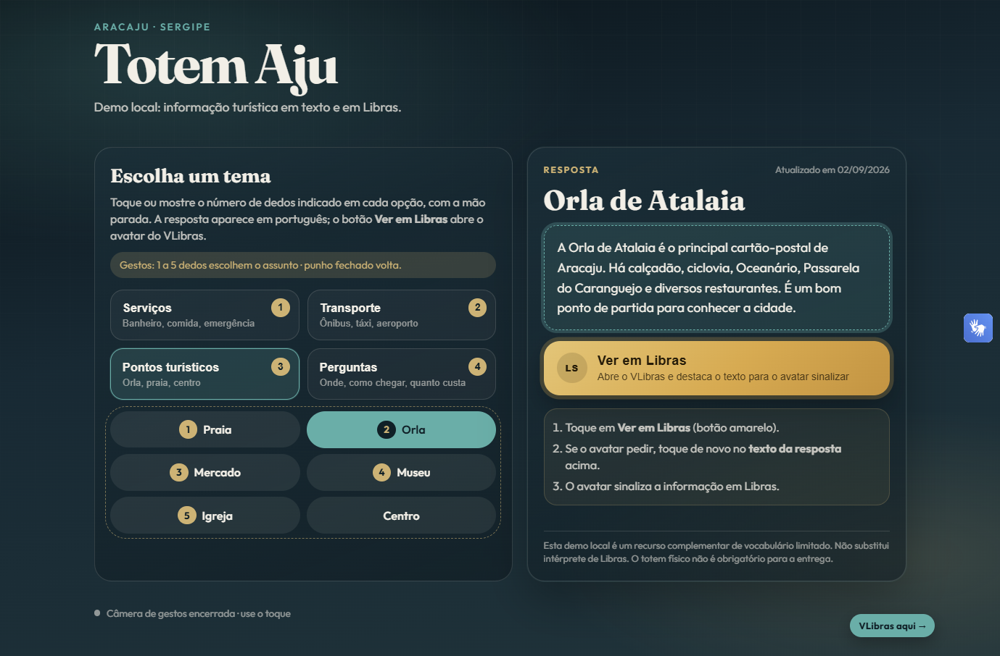
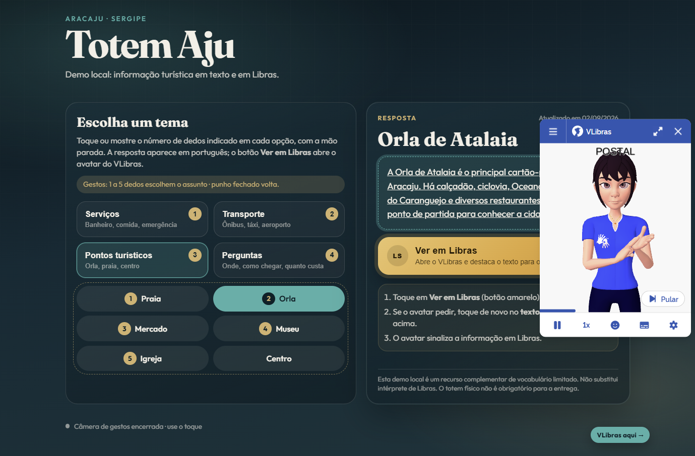

Totem interativo de acessibilidade comunicacional em Libras para turistas surdos em Aracaju, com reconhecimento de sinais por visão computacional
Pessoas surdas que visitam Aracaju não têm como obter informação turística básica, como onde fica um banheiro, como chegar à Orla de Atalaia ou qual ônibus tomar, em sua própria língua. A acessibilidade comunicacional em espaços públicos não é uma cortesia: é obrigação prevista na Lei de Libras (Lei nº 10.436/2002), no Decreto nº 5.626/2005, que a regulamenta, e na Lei Brasileira de Inclusão (Lei nº 13.146/2015).
O Totem Aju é um totem interativo, composto por monitor com tela sensível ao toque, webcam e computador, que responde perguntas turísticas de pessoas surdas. O projeto se insere na linha de visão computacional aplicada ao fomento ao turismo e à preservação cultural de Sergipe.
Este relatório descreve o estado do projeto na entrega parcial: o recorte do problema, as decisões técnicas, a arquitetura, a estruturação dos dados (núcleo desta etapa), o que já está funcionando, os riscos éticos identificados e o planejamento até a entrega final. O código-fonte está no repositório github.com/athena272/totem-aju.
Objetivo geral. Construir um protótipo funcional de totem que permita a um turista surdo obter informações turísticas de Aracaju sinalizando em Libras e receber a resposta em texto e em Libras.
Objetivos específicos.
| Sentido | Solução adotada |
|---|---|
| Turista surdo para o totem | Reconhecimento de sinais em Libras por visão computacional. É a contribuição técnica deste trabalho. |
| Totem para o turista surdo | Resposta em texto em português e tradução para Libras pelo VLibras (iniciativa do governo federal, desenvolvida pelo LAViD/UFPB), exibida num avatar 3D. |
O reconhecimento de Libras contínua e irrestrita é um problema de pesquisa aberto: envolve segmentar sinais num fluxo contínuo, expressões faciais gramaticais, classificadores manuais e concordância espacial. Não é viável num semestre, e uma tentativa nessa direção resultaria num sistema que falha na demonstração.
O recorte adotado é o oposto: um vocabulário pequeno e fechado de 26 sinais do domínio turístico, que funcione de verdade. A interface colabora com essa restrição: o usuário escolhe uma categoria e sinaliza apenas a palavra-chave, o que reduz o espaço de busca do classificador e aumenta a taxa de acerto percebida.
Seguindo a formulação de Russell e Norvig, o totem pode ser descrito como um agente que percebe o usuário pela câmera e pela tela de toque e age exibindo respostas.
| Componente | Descrição |
|---|---|
| Desempenho | Acerto na intenção do usuário, tempo até a resposta, número de escolhas erradas, correção factual da informação exibida e satisfação de usuários surdos. |
| Ambiente | Espaço público turístico (orla, aeroporto, mercados), com iluminação e fundo variáveis, um turista surdo à frente do totem e outras pessoas passando ao fundo. |
| Atuadores | Tela com o texto em português, avatar do VLibras e indicadores visuais de estado (contagem de dedos, barra de confirmação, rodapé da câmera). |
| Sensores | Webcam, da qual o MediaPipe extrai os landmarks de mãos e corpo, e a tela sensível ao toque. |
O ambiente é parcialmente observável (oclusão das mãos e ruído na detecção dos landmarks), estocástico (o mesmo sinal varia entre pessoas e repetições), sequencial (o menu tem dois níveis e a escolha atual depende da anterior), dinâmico (a mão se move enquanto o agente decide), contínuo nas percepções e discreto nas ações, e de agente único (as pessoas ao fundo são ruído, não agentes com quem o totem interage). Por isso o totem é um agente reativo baseado em modelo: ele mantém estado interno, como o nível atual do menu, o histórico recente de dedos e a trava contra repetição de escolhas.
Foi sugerida à equipe a adoção do Virtual Human Toolkit (USC-ICT) como plataforma base. A avaliação, registrada como Architecture Decision Record no repositório, levou ao descarte dessa opção:
| Virtual Human Toolkit + Unity | Python (MediaPipe) + web + VLibras |
|---|---|
| Reconhece e produz fala; não tem nenhum componente de reconhecimento de língua de sinais. | MediaPipe Holistic extrai mãos e corpo em tempo real, em CPU, que é a base do reconhecimento de Libras. |
| Orientado ao inglês, sem suporte a Libras ou português. | VLibras traduz português para Libras num avatar 3D, sem custo de desenvolvimento. |
| Exige Unity e C#, com licença acadêmica restritiva e dependências antigas. | Pilha única (Python e web), licença livre, ecossistema padrão de aprendizado de máquina. |
O raciocínio decisivo é de custo de oportunidade: o toolkit resolveria apenas o avatar que responde, que é a parte fácil e já tem solução brasileira específica para Libras, e imporia uma plataforma inteira que não contribui para o reconhecimento de sinais, onde estão o mérito técnico e o gargalo do cronograma.
Em vez de alimentar o classificador com imagens, o pipeline extrai landmarks (coordenadas 3D de pontos das mãos e do corpo) e os normaliza geometricamente. Essa representação descarta informação irrelevante para o sinal (cor da pele, roupa, fundo, iluminação), reduz a entrada de centenas de milhares de pixels para 225 números por quadro e, com isso, reduz drasticamente a quantidade de dados necessária para treinar e permite operação em tempo real sem GPU. É também uma escolha com benefício de privacidade: o sistema pode persistir só coordenadas, nunca imagens.
O software se divide em três camadas com fronteiras bem definidas:
Princípio estruturante: o domínio não conhece a infraestrutura.
A lógica de negócio depende de abstrações (Protocol do Python), nunca
de bibliotecas concretas. O contrato de extração é:
class LandmarkExtractor(Protocol):
def extract(self, frame: NDArray[np.uint8]) -> FrameLandmarks: ...
Só o módulo mediapipe_extractor.py importa o MediaPipe, e de forma
preguiçosa. Isso resolve três problemas concretos: o MediaPipe só instala em Python
3.9 a 3.12, então o restante do código e os testes rodam em qualquer versão; os
testes não dependem de webcam, porque um extrator falso devolve landmarks
sintéticos; e a equipe trabalha em paralelo, sem que todos precisem da captura
configurada.
| Módulo | Responsabilidade |
|---|---|
vision/schema.py | Estrutura imutável de um quadro de landmarks (FrameLandmarks) |
vision/mediapipe_extractor.py | Adapta o MediaPipe Holistic ao contrato de extração |
vision/normalization.py | Funções puras de normalização geométrica |
vision/sequence.py | Janela temporal deslizante e reamostragem |
vision/heuristics.py | Estado de cada dedo por geometria 3D |
data/recorder.py, data/manifest.py | Captura de amostras para o disco e índice persistente |
menu/*, cli/menu.py | Menu por dedos: contagem, confirmação e publicação do estado |
preview/ | Interface web do totem, base curada e VLibras |
Esta seção descreve o contrato de dados do projeto: o que é uma amostra, como ela é representada, normalizada, armazenada e avaliada. Esse contrato está implementado e testado; ele é o que permite que coleta, treino e inferência usem exatamente o mesmo formato.
A lista canônica está em src/totem_aju/vocabulary.py. Os
identificadores são estáveis e sem acento, porque ficam gravados no manifesto: um
rótulo nunca pode ser renomeado depois que houver amostras com ele.
| Grupo | Sinais (glosa) | Qtd. |
|---|---|---|
| Controle da interação | OLÁ, OBRIGADO, SIM, NÃO, AJUDA, REPETIR | 6 |
| Perguntas | ONDE, COMO-CHEGAR, QUANTO-CUSTAR, QUE-HORAS | 4 |
| Serviços e necessidades | BANHEIRO, COMER, ÁGUA, HOSPITAL, POLÍCIA, DINHEIRO, HOTEL | 7 |
| Transporte | ÔNIBUS, TÁXI, AEROPORTO | 3 |
| Pontos turísticos de Aracaju | PRAIA, ORLA (de Atalaia), MERCADO, MUSEU, IGREJA, CENTRO (histórico) | 6 |
Para cada quadro da câmera, o MediaPipe Holistic devolve 21 landmarks por mão e 33 landmarks de pose, cada um com coordenadas (x, y, z). O quadro é achatado num vetor de (2 × 21 + 33) × 3 = 225 valores:
Uma mão não detectada é representada por zeros, acompanhada de um indicador
booleano (left_hand_detected, right_hand_detected), e não
por um valor nulo. Assim, todo quadro tem o mesmo formato e o classificador nunca
recebe entrada de tamanho variável.
O MediaPipe devolve coordenadas relativas à imagem: o mesmo sinal produz vetores muito diferentes se a pessoa estiver mais à esquerda ou mais longe da câmera. Sem tratamento, o modelo gastaria dados aprendendo a ignorar posição e distância. Cada mão passa por duas transformações, nesta ordem:
p̂i = (pi − p0) / ‖p9 − p0‖, para i = 0, ..., 20
A pose não é normalizada dessa forma, de propósito: ela carrega a informação de onde, em relação ao corpo, o sinal é executado, e a Libras usa essa localização como elemento distintivo. As duas propriedades (invariância a translação e a escala) são verificadas por testes unitários.
Duas pessoas executam o mesmo sinal em durações diferentes, e a mesma pessoa
varia entre repetições, mas o classificador exige tensores de formato fixo. Cada
repetição é capturada por 2,5 s (cerca de 75 quadros a 30 fps) e
o SequenceBuffer a reamostra para exatamente 32
quadros por interpolação linear no eixo do tempo, preservando o primeiro e
o último quadro.
Formato final de uma amostra: um tensor de 32 × 225 números em ponto flutuante (32 quadros, 225 características por quadro), com um rótulo do vocabulário e o identificador do sinalizador.
Cada amostra é gravada como um arquivo NumPy em
data/samples/<sinal>/<sinalizador>_<nnnn>.npy, e uma
linha é acrescentada ao índice data/manifest.jsonl (formato JSON
Lines). Exemplo ilustrativo de uma linha:
{"detection_ratio": 0.97, "n_frames": 32, "recorded_at": "2026-10-20T14:03:11+00:00",
"relative_path": "samples/banheiro/s01_0001.npy", "sign": "banheiro", "signer_id": "s01"}
signer_id é obrigatório: sem ele, a divisão de
treino e teste por pessoa (seção 5.7) seria impossível.detection_ratio é a fração de quadros em que
alguma mão foi detectada; serve para descartar amostras com enquadramento ruim.data/ não é versionada no git: os arquivos são grandes e
podem conter dados pessoais.A coleta é feita pela ferramenta de linha de comando
totem-capture --sign <sinal> --signer <id> --repetitions 20,
que valida o rótulo contra o vocabulário e avisa quando uma amostra teve baixa taxa
de detecção. Regras:
Dividir treino e teste aleatoriamente por amostra faria repetições da mesma pessoa caírem nos dois conjuntos: o modelo aprenderia a reconhecer a pessoa, e a acurácia relatada seria artificialmente alta. Por isso a avaliação será agrupada por sinalizador (validação cruzada leave-one-signer-out), e a métrica principal será o desempenho em sinalizadores nunca vistos no treino. Serão reportados acurácia, F1 macro e matriz de confusão, comparando um modelo de referência sobre características agregadas no tempo (por exemplo, Random Forest ou SVM no scikit-learn) com um classificador temporal (por exemplo, GRU ou CNN 1D em PyTorch).
O pipeline de coleta está pronto e testado, mas a coleta em volume ainda não começou: no momento não há amostras gravadas, e não há resultados de treino a relatar. Para não depender só de colaboradores da equipe, avaliamos também usar o dataset público MINDS-Libras (UFMG, 20 sinais, vários sinalizadores), extraindo landmarks dos vídeos com o mesmo pipeline, tanto para pré-treino quanto para comparação de resultados.
Enquanto o classificador de sinais não é treinado, o totem já pode ser navegado com a mão: o usuário mostra de 1 a 5 dedos para escolher uma opção. Diferentemente do classificador, que vai aprender a partir de dados, essa etapa é uma abordagem baseada em conhecimento: regras geométricas escritas pela equipe sobre os mesmos landmarks, sem treinamento.
Como um dedo é considerado aberto. Cada dedo recebe três pistas independentes, e é considerado aberto quando pelo menos duas concordam (votação por maioria):
| Dedo | Pistas (aberto se pelo menos 2 de 3 forem verdadeiras) |
|---|---|
| Indicador, médio, anelar e mínimo | (1) ângulo na articulação intermediária maior que 140°; (2) desvio de direção entre as duas falanges menor que 55°; (3) distância da ponta ao pulso maior que 1,55 vez o tamanho da mão. |
| Polegar | (1) ângulo na articulação maior que 150°; (2) distância da ponta à base do indicador maior que 0,5 vez o tamanho da mão; (3) afastamento lateral em relação ao eixo da mão maior que 0,35. |
O "tamanho da mão" é a distância entre o pulso e a base do dedo médio, a mesma referência da normalização, o que torna as regras independentes da distância à câmera. Para estabilizar a leitura, os landmarks passam por uma média móvel exponencial (α = 0,5) e o estado de cada dedo passa por uma histerese sobre os últimos 6 quadros (aberto se estiver aberto em pelo menos 60% deles, fechado se em no máximo 40%).
Decisões de interação. A escolha só é confirmada depois de a contagem ficar parada por 1 segundo, medido em tempo e não em quadros, porque o MediaPipe roda de 7 a 20 quadros por segundo conforme o computador. Depois de uma escolha, o mesmo número só vale de novo quando a mão sai do quadro por 0,4 s; sem essa trava, quem escolhe a categoria 3 e mantém a mão parada escolheria o assunto 3 sem querer. Na tela de assuntos, o punho fechado volta às categorias.
O Python só percebe a mão e grava o estado num arquivo JSON (com escrita atômica e um identificador por escolha); o site lê esse arquivo a cada 250 ms e decide o que o número significa no nível atual do menu. Assim, mudar as categorias da base de conhecimento não exige mudar o código de visão.
O preview é a interface web do totem. Ela tem 4 categorias (Serviços,
Transporte, Pontos turísticos e Perguntas), respostas curadas para os 26 temas do
vocabulário, cada uma com data de verificação, e o widget oficial do VLibras. A
navegação funciona por toque e, com o totem-menu em execução, pelo
menu por dedos.


A base de conhecimento é curada pela equipe e não é gerada por modelo de linguagem. Para informações voláteis, como preços e horários, o totem deliberadamente não informa valores e orienta o turista a confirmar no local, em vez de arriscar um dado errado.
node --test)
para o menu de dois níveis e a leitura do estado da câmera no site.Terminologia. O trabalho usa "pessoa surda" (e não "surdo-mudo"), "pessoa ouvinte" como oposto de surdo e "língua de sinais" ou "Libras" (e não "linguagem de sinais"), porque Libras é uma língua com gramática própria. A descrição inicial da ideia usava "pessoas surdas e mudas" e foi corrigida.
Riscos e mitigações, alinhados às diretrizes da CAPES/MEC sobre uso ético de IA:
| Risco | Descrição | Mitigação |
|---|---|---|
| Viés do dataset e variação regional | A Libras varia por região e geração; poucos sinalizadores ensinam ao modelo o estilo dessas poucas pessoas. | Registrar o sinalizador em toda amostra, buscar o máximo de sinalizadores distintos e declarar a composição do dataset como limitação. |
| Vazamento de dados na avaliação | Divisão aleatória por amostra infla a acurácia. | Divisão agrupada por sinalizador; métrica principal em pessoas nunca vistas. |
| Exclusão de quem não sabe Libras | Nem toda pessoa surda é fluente em Libras. | Navegação por toque sempre disponível e resposta em texto e em Libras ao mesmo tempo. |
| Alucinação de modelos de linguagem | Horários, preços ou endereços inventados causam prejuízo real ao turista. | Respostas restritas a uma base curada, com data de verificação; sem resposta na base, o totem diz que não sabe. |
| Privacidade e imagem | O totem filma pessoas em espaço público. | Quadros processados em memória; só landmarks são persistidos; dados de coleta fora do git e com consentimento informado. |
| Falsa sensação de acessibilidade | O totem pode ser usado como desculpa para não contratar intérpretes. | Declarar na interface e no artigo que é um recurso complementar, de vocabulário limitado, e não substitui intérprete. |
| Período | Entrega prevista | Situação |
|---|---|---|
| até 03/09 | Equipe, tema e justificativa definidos | Concluído |
| setembro | Pipeline de extração de landmarks e coleta do dataset | Pipeline, ferramenta de coleta e testes concluídos; coleta em volume não iniciada |
| outubro | Treino e avaliação do classificador; integração do VLibras | VLibras integrado ao preview e menu por dedos funcionando; treino depende dos dados |
| início de novembro | Montagem do quiosque e testes com usuários surdos | A fazer |
| 23 a 25/11 | Apresentação final e artigo | A fazer |
Próximos passos, em ordem de prioridade:
Conforme as diretrizes da CAPES/MEC, a equipe declara que usou assistentes de IA generativa como ferramenta de apoio na codificação, na revisão de texto e na organização deste relatório. A definição do problema, a modelagem, as decisões técnicas, a validação e a análise crítica são da equipe. Os números citados neste relatório (dimensões dos dados, parâmetros e quantidade de testes) foram conferidos diretamente no código e na execução dos testes, e as referências foram verificadas manualmente.